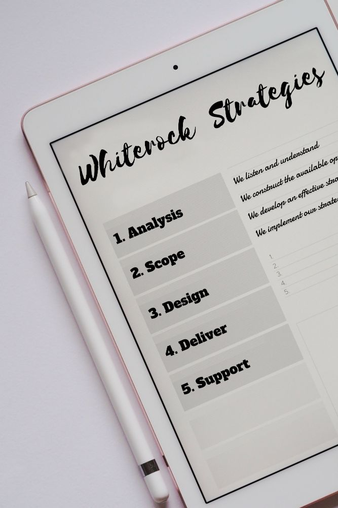

Why Whiterock Strategies
White Rock use a tried and tested 5-stage method for developing effective strategies for our customers.
- Analysis (We listen and understand)
- Scope (We construct the available options)
- Design (We develop an effective strategy)
- Deliver (We implement our strategy)
- Support (We manage ongoing assistance)
First of all we listen to you, we analyse your needs until we build up an detailed understanding of your requirements. We can then scope a number of options and devise an appropriate personalised plan that is specifically tailored for you.
In some circumstances our initial scoping exercise may be enough to set you on the right course for success, though typically we assist customers in the whole design and delivery of our strategic plan.
On completion, White Rock can also offer ongoing support, helping you maximise the value of your investment and identify future opportunities.
Contact Us Now
